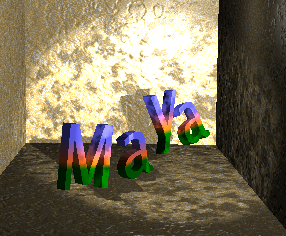

有关阴影的详细信息，请参见 Maya 中的阴影。
- 阴影颜色(Shadow Color)
-
阴影颜色是由灯光产生的。使用有色阴影可以模拟由透明有色曲面（如有色玻璃）产生的阴影。默认设置为黑色。
您还可以将纹理映射到阴影以创建所需的效果。以下示例显示了已映射到聚光灯“阴影颜色”(Shadow Color)的棋盘格纹理。

如果决定映射有色纹理（如以下示例中的灰泥纹理），请将纹理的颜色更改为黑色和白色（若需要）。

深度贴图阴影属性(Depth Map Shadow Attributes)
“深度贴图阴影属性”(Depth Map Shadow Attributes)控制由灯光产生的深度贴图阴影的外观。
有关深度贴图阴影的详细信息，请参见深度贴图阴影。
- 使用深度贴图阴影(Use Depth Map Shadows)
-
如果“使用深度贴图阴影”(Use Depth Map Shadows)处于启用状态，则灯光会产生深度贴图阴影。默认情况下，“使用深度贴图阴影”(Use Depth Map Shadows)处于禁用状态。
- 分辨率(Resolution)
-
灯光的阴影深度贴图的分辨率。
如果“分辨率”(Resolution)太低，阴影边缘将锯齿化或像素化。增加“分辨率”(Resolution)也会增加渲染时间，因此需将其设定为产生可接受质量的阴影时所需的最低值。
作为起点，将“分辨率”(Resolution)设定为渲染分辨率。如果灯光在动画期间移动，可能需要增加“分辨率”(Resolution)以避免出现闪烁阴影。滑块范围介于 16 到 8192 之间。默认值为 512。
- 使用中间距离(Use Mid Dist)
-
如果禁用，Maya 会为深度贴图中的每个像素计算灯光与最近阴影投射曲面之间的距离。如果灯光与另一个阴影投射曲面之间的距离大于深度贴图距离，则该曲面位于阴影中。
注： 如果“使用中间距离”(Use Mid Dist)处于禁用状态，则照明的阴影投射曲面上可能会出现暗斑或条纹，这是因为灯光与曲面之间的距离大于存储的深度值，从而使曲面位于阴影中的缘故。此类伪影是由于某些深度贴图的分辨率有限而导致的，对于弯曲的曲面或由不垂直于曲面的光线所照明的曲面，可能特别明显。深度贴图中的像素会被强制与场景的大片区域近似。尽管可以通过增加“分辨率”(Resolution)来减少这种效果，但这样只会使问题变小。这样还会增加渲染时间。更好的解决方法是启用“使用中间距离”(Use Mid Dist)。
如果启用，则对于深度贴图中的每个像素，Maya 都会计算灯光与最近阴影投射曲面之间的距离以及灯光与下一个最近阴影投射曲面之间的距离，然后求二者的平均值。
如果灯光与另一个阴影投射曲面之间的距离大于深度贴图距离，则该曲面位于阴影中。默认情况下，“使用中间距离”(Use Mid Dist)处于启用状态。
注：如果“使用中间距离”(Use Mid Dist)处于启用状态，则 Maya 只计算两个阴影投射曲面（即启用“投射阴影”(Casts Shadows)属性的曲面）之间的中间距离。
- 使用自动聚焦(Use Auto Focus)
-
如果启用，Maya 会自动缩放深度贴图，使其仅填充灯光所照明的区域中包含阴影投射对象的区域。
例如，如果阴影投射对象仅位于聚光灯束的中心，则深度贴图仅覆盖那些对象所占据的区域。因为“分辨率”(Resolution)是绝对分辨率（即像素数，而非每英寸像素数），所以有效地减小深度贴图的大小会增加深度贴图的分辨率和阴影的质量，而不会增加渲染时间。
如果禁用，可以使用“聚焦”(Focus)属性（针对点光源和聚光灯）或“宽度聚焦”(Width Focus)属性（针对平行光）在灯光照明的区域内手动缩放深度贴图。默认情况下“使用自动聚焦”(Use Auto Focus)处于启用状态。
- 聚焦(Focus)、宽度聚焦(Width Focus)
-
用于在灯光照明的区域内缩放深度贴图的角度（“聚焦”(Focus)）或宽度（“宽度聚焦”(Width Focus)）。（可以通过启用“使用自动聚焦”(Use Auto Focus)自动缩放深度贴图。）
因为“分辨率”(Resolution)是绝对分辨率（即像素数，而非每英寸像素数），所以有效地减小深度贴图的大小会增加深度贴图的分辨率和阴影的质量，而不会增加渲染时间。
当“使用自动聚焦”(Use Auto Focus)处于禁用状态时，“聚焦”(Focus)仅适用于点光源和聚光灯。滑块范围介于 0 到 360 之间。默认值为 90。
当“使用自动聚焦”(Use Auto Focus)处于禁用状态时，“宽度聚焦”(Width Focus)仅适用于平行光。有效范围是 0 到无限。默认值为 100。
- 使用灯光位置(Use Light Position)
-
“使用灯光位置”(Use Light Position)仅适用于平行光。如果启用，仅平行光的图标前端的对象被照明并投射阴影。如果禁用，则平行光的图标前端和后端的对象均被照明并投射阴影。
“使用灯光位置”(Use Light Position)仅适用于平行光。默认情况下，“使用灯光位置”(Use Light Position)处于禁用状态。
- 过滤器大小(Filter Size)
-
控制阴影边的柔和度。（阴影边的柔和度还会受阴影大小和“分辨率”(Resolution)的影响。）增加“过滤器大小”(Filter Size)也会增加渲染时间，因此需将其设定为产生可接受质量的阴影时所需的最低值。通常，“过滤器大小”(Filter Size)为 3 或更少便已足够。有效范围是 0 到无限。滑块范围为 0 到 5。默认值为 1。
提示：如果需要非常柔和的阴影，请使用低深度贴图分辨率，然后调整该设置。
- 偏移(Bias)
-
深度贴图移向或远离灯光的偏移。仅当遇到以下问题且无法通过调整其他属性来解决这些问题时，才调整“偏移”(Bias)：
- 如果所照明的曲面上出现暗斑或条纹，请逐渐增加“偏移”(Bias)值，直到斑点或条纹消失。
- 如果阴影似乎要从阴影投射曲面分离，请逐渐减小“偏移”(Bias)值，直到阴影显示正确。
滑块范围介于 0 到 1 之间，但可以输入更大的值。默认值是 0.001。
- 雾阴影强度(Fog Shadow Intensity)
-
控制出现在灯光雾中的阴影的黑暗度。有效范围为 1 到 10。默认值为 1。
- 雾阴影采样(Fog Shadow Samples)
-
控制出现在灯光雾中的阴影的粒度。增加“雾阴影采样”(Fog Shadows Samples)时也会增加渲染时间，因此需将其设定为产生可接受质量的阴影时所需的最低值。从非常窄的对象投射到灯光雾的阴影可能会在动画期间发生偏移。在该情况下，应增加“体积阴影采样”(Vol Shadow Samples)的值。默认值为 20。
- 基于磁盘的深度贴图(Disk Based Dmaps)
-
通过该选项，可以将灯光的深度贴图保存到磁盘，并在后续渲染过程中重用它们。通过将深度贴图保存到磁盘并稍后重用它们，可以减少渲染场景所花费的时间（请参见重用深度贴图）。深度贴图保存在 renderDate/depth 目录中。
- 禁用(Off)
-
Maya 会在渲染过程中创建新的深度贴图。Maya 不会从磁盘中读取深度贴图。Maya 不会将深度贴图保存到磁盘。
- 覆盖现有深度贴图(Overwrite Existing Dmap(s))
-
Maya 会创建新的深度贴图，并将其保存到磁盘。如果磁盘上已经存在深度贴图，Maya 会覆盖这些深度贴图。
当将贴图写入磁盘时，会获得两个深度贴图：其中一个是第一个阴影投射曲面，另一个是第二个阴影投射曲面。
- 重用现有深度贴图(Reuse Existing Dmap(s))
-
Maya 会进行检查以确定深度贴图是否在先前已保存到磁盘。如果已保存到磁盘，Maya 会使用这些深度贴图，而不是创建新的深度贴图。如果未保存到磁盘，Maya 会创建新的深度贴图然后将其保存到磁盘。
提示：如果要将深度贴图保存到磁盘，请偶尔检查 renderDate/depth 目录，然后删除任何不需要的深度贴图文件。
- 阴影贴图文件名(Shadow Map File Name)
-
Maya 保存到磁盘的深度贴图文件的名称。深度贴图的名称也可能包括场景名（如果“添加场景名称”(Add Scene Name)处于启用状态）、灯光名（如果“添加灯光名称”(Add Light Name)处于启用状态）以及帧扩展名（如果“添加帧扩展名”(Add Frame Ext)处于启用状态）。仅当“基于磁盘的深度贴图”(Disk Based Dmaps)设定为“覆盖现有深度贴图”(Overwrite Existing Dmap(s))或“重用现有深度贴图”(Reuse Existing Dmap(s))时，“阴影贴图文件名”(Shadow Map File Name)才可用。深度贴图保存在 renderDate/depth 目录中。默认的深度贴图名称为 depthmap。
- 添加场景名称(Add Scene Name)
-
将场景名添加到 Maya 保存到磁盘的深度贴图文件的名称中。默认情况下，“添加场景名称”(Add Scene Name)处于禁用状态。
- 添加灯光名称(Add Light Name)
-
将灯光名添加到 Maya 保存到磁盘的深度贴图文件的名称中。默认情况下，“添加灯光名称”(Add Light Name)处于启用状态。
- 添加帧扩展名(Add Frame Ext)
-
如果启用，Maya 会为每个帧保存一个深度贴图，然后将帧扩展名添加到深度贴图文件的名称中。如果禁用，Maya 会为整个动画保存一个深度贴图文件，但不会将帧扩展名添加到深度贴图文件的名称中。（默认关闭。）
- 使用宏(Use Macro)
-
仅当“基于磁盘的深度贴图”(Disk Based Dmaps)设定为“重用现有深度贴图”(Reuse Existing Dmap(s))时才可用。它是指宏脚本的路径和名称，Maya 会运行该宏脚本以在从磁盘中读取深度贴图时更新该深度贴图。“添加使用宏”(Add Use Macro)主要用于疑难解答。
宏会获取有关在磁盘上创建或处理深度贴图的所有信息。以下示例是以 Perl 形式编写的。宏会后期处理或创建贴图。可以修改或创建任意宽度或高度的贴图。Maya 会查找在 IFF Z 深度贴图文件中指定的大小然后使用它们。每次要从磁盘中读取贴图时，都会调用宏。例如，对于点光源（最多可以使用六个贴图），可能会多次调用贴图。
对参数进行命名，以便可以轻松地添加新的参数。Maya 当前提供给脚本的参数为：
mapname=FullPathMapName,middistmapname=FullPathMidDistMapName, lightname=LightShapeNameUsed,pathname=ShadowMapPathUsed, readanimextname=RedExtUsed,curranimextname=CurrExt, lastdumpanimextname=lastExtDumped,bias=biasValue
Perl 脚本宏的示例如下所示：
#!/bin/perl
# # Example of a callback macro called before reading shadow maps from disk #
# # One argument with fields separated by '&'
# each field being 'variableName=variableValue
#
# Creates a vartab hash table out of the ARGV[0] argument
#
# print "\n------------------\n",$ARGV[0],"\n------------------\n";
if( $#ARGV == 0 )
{
@fields = split( /\,/, $ARGV[0] );
$nbfields = $#fields + 1;
foreach $field( @fields )
{
@varvalue = split( /\=/, $field );
$vartab{$varvalue[0]} = $varvalue[1];
}
$mapname = $vartab{"mapname"};
$middistmapname = $vartab{"middistmapname"};
$lightname = $vartab{"lightname"};
$pathname = $vartab{"pathname"};
$readanimextname = $vartab{"readanimextname"};
$curranimextname = $vartab{"curranimextname"};
$lastdumpanimextname = $vartab{"lastdumpanimextname"};
$bias = $vartab{"bias"};
print "\tmapname = ",$mapname,"\n";
print "\tmiddistmapname = ",$middistmapname,"\n";
print "\tlightname = ",$lightname,"\n";
print "\tpathname = ",$pathname,"\n";
print "\treadanimextname = ",$readanimextname,"\n";
print "\tcurranimextname = ",$curranimextname,"\n";
print "\tlastdumpanimextname = ",$lastdumpanimextname,"\n";
print "\tbias = ",$bias,"\n";
#
# List the shadow map files to be postprocessed
#
print "\n";
if ( -e $mapname ) {
print "PostProcess shadow depth map file ",$mapname,"\n";
}
if ( -e $middistmapname ) {
print "PostProcess shadow depth map file ",$middistmapname,"\n";
}
#
# return 0 to confirm everything is ok
#
exit 0;
}
- 仅使用单一深度贴图(Use Only Single Dmap)
-
仅适用于聚光灯。
如果启用，Maya 会为聚光灯生成单一深度贴图。如果“圆锥体角度”(Cone Angle)小于 90，则使用单一深度贴图便已足够，但如果“圆锥体角度”(Cone Angle)较大，“分辨率”(Resolution)可能不足以产生高质量的阴影（阴影边可能出项锯齿化）。如果“圆锥体角度”(Cone Angle)较大，请禁用“仅使用单一深度贴图”(Use Only Single Dmap)。默认情况下，“仅使用单一深度贴图”(Use Only Single Dmap)处于启用状态。
如果禁用，Maya 会为聚光灯生成最多五个独立的深度贴图。每个深度贴图将沿着以下六种可能的方向之一从灯光处开始延伸：X 轴正方向或负方向、Y 轴正方向或负方向以及 Z 轴正方向或负方向。每个深度贴图的分辨率为“分辨率”(Resolution)。
即使“圆锥体角度”(Cone Angle)较大，聚光灯还是会产生高质量的阴影。因为 Maya 会为灯光生成多个深度贴图，所以渲染时间也会增加。但是，您可以通过启用或禁用“使用 XYZ+- 深度贴图”属性来控制由 Maya 生成的深度贴图的数量和方向。
- 使用 X+ 深度贴图(Use X+ Dmap)、使用 Y+ 深度贴图(Use Y+ Dmap)、使用 Z+ 深度贴图(Use Z+ Dmap)、使用 X- 深度贴图(Use X- Dmap)、使用 Y- 深度贴图(Use Y- Dmap)、使用 Z- 深度贴图(Use Z- Dmap)
-
这些属性仅适用于聚光灯（如果“仅使用单一深度贴图”处于禁用状态）和点光源。所有属性的默认设置处于启用状态。
控制 Maya 为灯光生成的深度贴图的数量和方向。例如，如果“X+ 深度贴图”处于启用状态，则 Maya 会沿着 X 轴正方向为灯光生成深度贴图。
对于聚光灯，Maya 最多可以生成五个深度贴图，而对于点光源，最多可以生成六个深度贴图。但是，通常只需要灯光沿着几个特定方向投射阴影。通过在某些方向禁用深度贴图，可帮助减少渲染时间。例如，如果在场景的顶部存在某个点光源，并且所有阴影投射对象都位于该光源下方，则可以禁用“使用 Y+ 深度贴图”(Use Y+ Dmap)（假设场景使用 Y 轴向上坐标系统），因此 Maya 不会在 Y 轴正方向（向上）生成深度贴图。
光线跟踪阴影属性(Raytrace Shadow Attributes)
控制由灯光生成的光线跟踪阴影的外观。
有关光线跟踪阴影的详细信息，请参见光线跟踪阴影。
- 使用光线跟踪阴影(Use Ray Trace Shadows)
-
如果启用，灯光会在光线跟踪场景时（即“光线跟踪”(Raytracing)在“渲染设置”(Render Settings)窗口中处于启用状态时）生成光线跟踪阴影。默认情况下，“使用光线跟踪阴影”(Use Ray Trace Shadows)处于禁用状态。
- 阴影半径(Shadow Radius)、灯光半径(Light Radius)、灯光角度(Light Angle)
-
通过对灯光的大小（“阴影半径”(Shadow Radius)或“灯光半径”(Light Radius)）或角度（“灯光角度”(Light Angle)）进行设置来控制阴影边的柔和度。例如，较大灯光所产生的阴影比较小灯光所产生的阴影柔和。灯光半径也用于灯光辉光，以确定是否遮挡/可见（针对点光源和聚光灯）。
“阴影半径”(Shadow Radius)属性仅适用于环境光。
“灯光半径”(Light Radius)属性仅适用于点光源、体积光和聚光灯。滑块范围介于 0（硬阴影）到 1（软阴影）之间。默认值为 0。
“灯光角度”(Light Angle)属性仅适用于平行光和体积光。滑块范围介于 0（硬阴影）到 180（软阴影）之间。默认值为 0。
- 阴影光线数(Shadow Rays)
-
控制软阴影边的粒度。增加“阴影光线数”(Shadow Rays)的数量也会增加渲染时间，因此需将其设定为产生可接受结果的阴影时所需的最低值。滑块范围介于 1 到 40 之间。默认设置为 1。
- 光线深度限制(Ray Depth Limit)
-
光线深度指定可以反射和/或折射光线但仍然导致对象投射阴影的最长时间。在这些点之间（光线会改变方向）的透明对象将不会对光线的终止造成影响。这可以通过示例进行最佳的视觉演示，在该示例中，光线跟踪阴影在地平面和反射面上均可见。如果将光线深度设定为 1，则阴影仅在地平面上可见。如果将光线深度设定为 2，则阴影在地平面和反射平面上均可见。